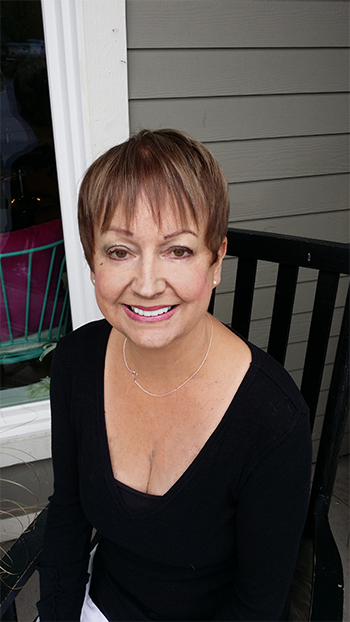

<!-- =========================
 SECTION: FROM BARB SCHWARZ
============================== -->
<section class="brief grey-bg text-left" id="frombarb">
    <div class="container">
        <div class="row">
            <!-- BRIEF HEADING -->
            <div class="col-md-12 content-section pull-left wow fadeInRight" data-wow-offset="20" data-wow-duration="1.75s">
                <div class="small-text-medium uppercase colored-text">
                    The ASPM<sup>®</sup> Masters Symposium Retreat 2015
                </div>
                <h2 class="text-left dark-text"><strong>A Message From</strong> Barb Schwarz</h2>
                <div class="colored-line-left"></div>

                <div class="content-section" style="margin-top: 40px;">
                    <div class="wow fadeInRight" style="text-align: left;">
                        
                        
                        <div>
                            Our 2015 Educational Symposium Retreat for ASPM<sup>®</sup>'s is going to be unlike any other Symposium or
                            retreat you have ever attended.
                        </div>
                        <div style="margin-top: 20px;">
                            This Symposium is a Symposium for ASPM’s<sup>®</sup>.  ASPM’s<sup>®</sup> will be able to share, network, interact,
                            and learn from other ASPM’s<sup>®</sup> about their businesses. We will participate in small group discussions,
                            learn from Masters Panels, Great Mastermind sessions and much more. Our Symposium will be interactive
                            in each session throughout the entire retreat. Every aspect we work with in our businesses as Masters
                            is on our agenda! By attending this private ASPM<sup>®</sup> educational Symposium retreat you will return home
                            with much more education on 'new marketing concepts, inventory ideas, pricing, team building, presentation
                            ideas, steps of how to grow your business to a higher level and more.'
                        </div>
                        <div style="margin-top: 20px;">
                            This will be a very intense productive time for ASPM<sup>®</sup>’s filled to the brim with business exercises,
                            productive business practices, panels, and many ideas from each ASPM<sup>®</sup> in attendance. This will happen
                            in small groups and larger groups as well. These ideas you can put to use the minute you return to your
                            business and your community. We will have Fabulous Speakers, however there will be fewer ‘featured’ speakers in this event because I have chosen
                            to put the emphasis on our interactive agenda for you our ASPM<sup>®</sup>’s. Each of you is a star and your sharing
                            is and will be greatly appreciated at Symposium. I have always said, “more is more.” And the more who
                            share will always receive more back than given. Please see our agenda below and register now, today!
                        </div>
                        <div style="margin-top: 20px; font-style: italic;">
                            By the way for any ASP<sup>®</sup> who wishes to attend this special ASPM<sup>®</sup> Symposium you can do so by becoming an
                            ASPM<sup>®</sup> 4 days before this event begins. Click on ‘The Masters Course’ on the top toolbar of our Symposium
                            home page to learn more.
                        </div>
                        <div style="margin-top: 20px;">
                            Make your commitment today to attend the ASPM<sup>®</sup> Symposium Retreat exclusively for ASPM’s<sup>®</sup>. Come ready to
                            learn more, network more, share more, learn more from others more, and grow your business and personal
                            life more too. If you have ever wondered about coming to a Symposium this is the ONE you do not want to
                            miss as an ASPM<sup>®</sup>!
                        </div>
                        <div style="margin-top: 20px;">
                            I want to thank the Committee/Co-Directors that are working with me to bring our Symposium to life for you: Jennne Norris, Trish
                            Kim and Kirk Bohrer as well as our International IAHSP Board and Volunteers!  We so look forward to seeing
                            you there!
                        </div>
                        <div style="margin-top: 20px;">
                            <span style="font-weight: bold;">Barb Schwarz</span>, The Creator of Home Staging<sup>®</sup>, Founder and CEO
                            Stagedhomes.com<sup>®</sup>, Founder and Chairwoman of The International Association of Home Staging Professionals<sup>®</sup>
                            and World Wide Staging Service Week<sup>®</sup>.
                        </div>

                        <!-- Extra Space -->
                        <div>&nbsp;</div>

                        <!-- BUTTON -->
                        <div class="row">
                            <div class="col-sm-5"></div>
                            <div class="col-sm-2">
                                <ul class="login-register small-text">
                                    <li>
                                        <div class="dropdown">
                                            <button class="btn btn-primary dropdown-toggle" type="button" id="menu1" data-toggle="dropdown">
                                                <span style="font-size: 20px;">REGISTER</span>
                                                <span class="caret"></span>
                                            </button>
                                            <ul class="dropdown-menu" role="menu" aria-labelledby="menu1">
                                                <li role="presentation"><a role="menuitem" tabindex="-1" target="_blank" href="https://www.regonline.com/MastersRetreat1715050">Masters Symposium Retreat 2015</a></li>
                                                <li role="presentation"><a role="menuitem" tabindex="-1" target="_blank" href="https://www.regonline.com/MastersWhidbey2015">ASPM<sup>®</sup> Masters Course and<br />Masters Symposium Retreat</a></li>
                                            </ul>
                                        </div>
                                    </li>
                                </ul>
                            </div>
                            <div class="col-sm-5"></div>
                        </div><!-- /END BUTTON -->
                    </div>

                </div><!-- content-section -->
            </div><!-- END: BRIEF HEADING -->
        </div><!-- row -->
    </div><!-- container -->
</section>
